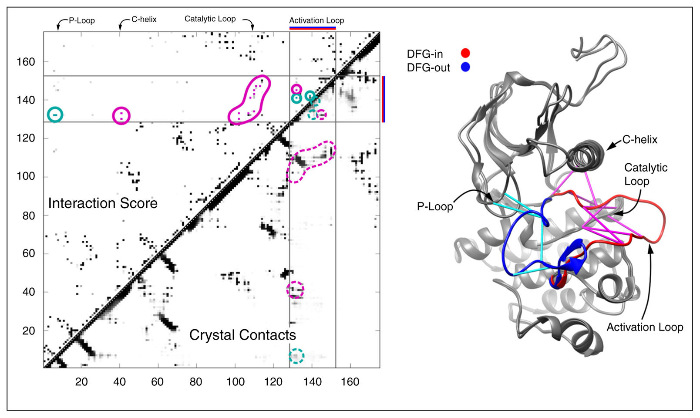
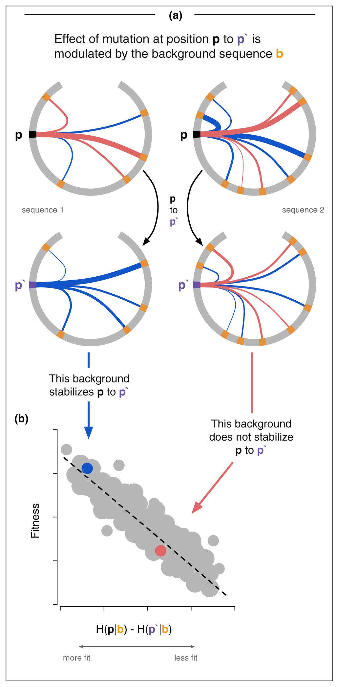

This review lands at a pivotal moment in computational biology — 2017, right at the cusp between the "coevolution era" and the "deep learning era" of protein structure prediction. It synthesizes a decade of work using statistical physics to understand protein sequences.
The basic question: Given a family of related protein sequences (say, thousands of kinase sequences from across the tree of life), can we build a mathematical model that captures why certain amino acid combinations appear together and others don't?
Start with the simplest model — independent sites. Imagine each position in the protein evolves independently. Position 42 "likes" to be leucine 60% of the time, valine 30%, etc. This is essentially a Position-Specific Scoring Matrix (PSSM). It works okay for sequence search, but it misses something huge: correlations between positions.
The Hamiltonian — an energy function over sequences. Borrowing from statistical physics, we assign every possible sequence S a statistical score:
H(S) = Σi hi(si) + Σi<j Jij(si, sj)
The site-wise bias — how much position i "prefers" each of the 21 possible amino acids (20 + gap), independent of everything else. It captures the frequency of each amino acid at this position across all sequences in the MSA.
If position 50 is always glycine (say, because it's in a tight loop where only glycine fits sterically), then h50(Gly) will be very favorable and h50(Trp) very unfavorable. If a position is highly variable, the fields will be relatively flat.
This component is equivalent to a PSSM. If you only had the fields and no couplings, you'd have an independent model — each position does its own thing.
This is where the power is. Jij(si, sj) asks: given that position i is amino acid A and position j is amino acid B, is that combination more or less likely than you'd expect from the individual frequencies alone?
It's not a single number per pair — it's a 21×21 matrix for every pair (i,j). So J12(Lys, Glu) might be very favorable because a salt bridge forms, while J12(Lys, Lys) might be unfavorable because you've got two positive charges clashing.
The critical insight of DCA is that raw correlations in the MSA mix direct and indirect effects. If residue A contacts B, and B contacts C, then A and C will look correlated even if they never interact. The Potts model inversion disentangles this — the J parameters represent direct couplings.

For a 100-residue protein, the full Hamiltonian has:
That's a lot of parameters, which is why you need deep MSAs (thousands of sequences) to fit the model. It's also why this approach struggled for orphan proteins with few homologs — a limitation that protein language models like ESM later solved by sharing information across families.
Fields alone = "position 50 likes glycine" (a profile)
Fields + couplings = "position 50 likes glycine, especially when position 23 is proline" (a landscape)
Follows the Boltzmann distribution: P(S) ∝ exp(−H(S)). Sequences with low H(S) are common in the family. Sequences with high H(S) are rare or nonexistent. This is the maximum entropy model — the least biased distribution that reproduces observed frequencies.
Important caveat: H(S) is a statistical score, not a physical energy in kilocalories. The fact that it correlates with physical ΔG is an empirical observation, not a derivation. It's a statistical look-up table, not an energy landscape.
The architectural parallel between the Potts model and AlphaFold2's Evoformer is striking and almost certainly not coincidental:
| Potts Model | Evoformer (AlphaFold2) |
|---|---|
| hi(si) — fields per position | MSA representation — per-residue embeddings via row/column attention |
| Jij(si, sj) — 21×21 coupling matrix per pair | Pair representation — full L×L matrix of pairwise embeddings |
| Inverse inference from MSA frequencies | Learned end-to-end from MSA + structure supervision |
| Maximum entropy (least biased fit) | Transformer (massively overparameterized, regularized by data) |
The Evoformer's MSA track processes rows (individual sequences) and columns (positions across sequences). The column attention reads off single-site statistics analogous to hi. The row attention lets sequences talk to each other — extracting covariation patterns.
The pair track maintains an explicit L×L matrix updated by outer products from the MSA track. This is the coupling matrix, except instead of 21×21 scalars, it's a rich learned embedding. The triangular attention enforces geometric consistency — exactly the transitivity correction DCA performs when separating direct from indirect couplings.
Potts/DCA (2009–2013) → coevolution contacts + Rosetta (Baker lab, 2015–2017) → trRosetta (2020) → AlphaFold2 Evoformer (2021). The two-track decomposition (single-site + pairwise) was inherited from decades of coevolutionary analysis. Deep learning replaced the statistical physics inference with a neural network that could learn far richer representations.
Definition: Epistasis is when the effect of a mutation depends on what other mutations are already present in the sequence. A mutation that's deleterious in one background can be neutral or even beneficial in another. The whole is not the sum of the parts.
In Potts model terms, epistasis is literally encoded in the couplings Jij(si, sj). If you mutate position i, the fitness effect depends on what's at every coupled position j. This is why the independent model (fields only, no couplings) systematically underperforms.

This term deserves more use in the protein ML field — when people talk about "context-dependent mutation effects" or "non-additive interactions," they're describing epistasis.
| Study | System | Correlation | Notes |
|---|---|---|---|
| Figliuzzi et al. 2015 | TEM-1 beta-lactamase (DMS) | R = 0.74 (R² = 0.55) | ΔH vs. ΔΔG: R = 0.81. Independent model only R = 0.63 |
| Ferguson et al. 2013 | HIV-1 Gag (replicative fitness) | ρ = −0.81 | 50 engineered mutants. Regularized: r = −0.85, AUROC = 0.93 |
| Hopf et al. 2017 (EVmutation) | 34 DMS datasets | ρ = 0.4–0.87 | Best: beta-lactamase 0.87, HIV 0.81. ProteinGym avg: 0.397 |
| Barton et al. 2016 | HIV immune escape timing | r = 0.66–0.81 | 86% correct escape location. Entropy alone: pseudo-R² = 0.05 |
A model with no structural data, no physics, no thermodynamic measurements — just sequence statistics from an MSA — achieves R = 0.74–0.85 against experimental fitness and ΔΔG. The independent model consistently underperforms, meaning epistasis is not a subtle effect — it's a major component of protein fitness.
The method used to infer Potts parameters changes the answer, not just the speed:
| Method | Speed | Accuracy | Best for |
|---|---|---|---|
| Mean-field DCA | Very fast | Approximate | Contact prediction |
| Pseudolikelihood (PLM) | Fast | Good | Contact prediction |
| Monte Carlo | Slow | Exact | Fitness/energy prediction |
| ACE (Adaptive Cluster Expansion) | Moderate | Good | Fitness/energy prediction |
Mean-field DCA underestimates sequence diversity and generates overly fit sequences. PLM tends to produce less stable sequences than reality. Only Monte Carlo and ACE faithfully reproduce the actual MSA statistics.
This paper is the intellectual ancestor of the modern protein ML stack. The Potts Hamiltonian — a statistical look-up table built from sequence co-variation, decomposed into per-site fields and pairwise couplings — achieves remarkable predictive power for fitness, stability, and structural contacts. Its two-track decomposition (single-site + pairwise) directly prefigures the Evoformer architecture. Its limitations (deep MSA requirement, fixed-length, no geometry) are exactly the problems that protein language models and structure prediction networks were built to overcome.
This is the baseline that every protein ML model is implicitly competing against.